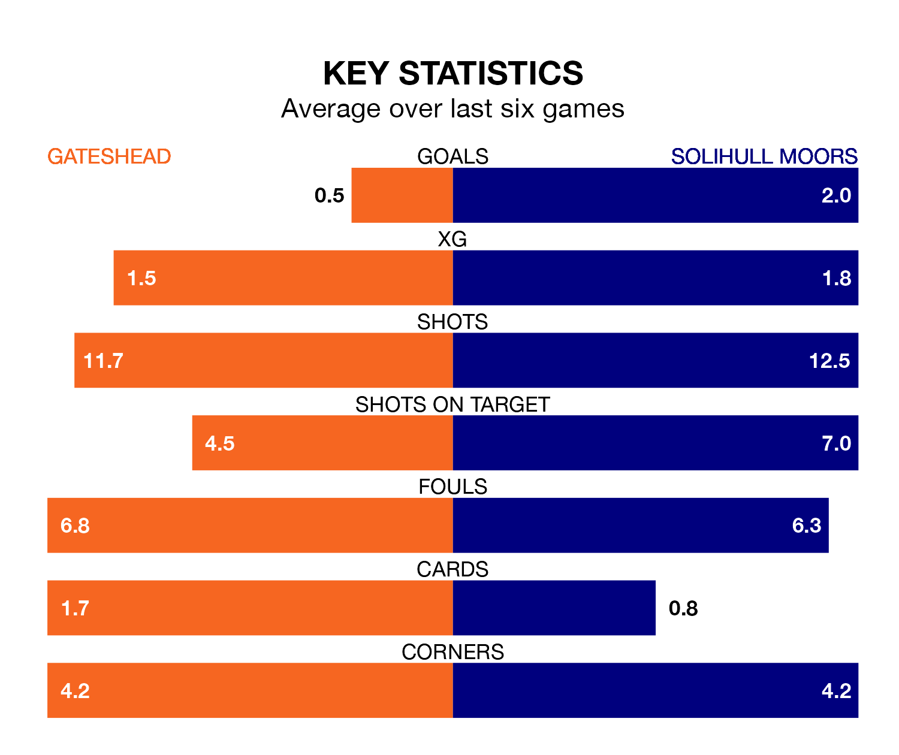

Gateshead welcome Solihull Moors to the Gateshead International Stadium on late Tuesday looking to pick up points to end their three-game losing streak.
Gateshead's struggles have left them with just four points from their last six National League matches, while their opponents have earned nine from a possible 18.
With 50 goals in 27 games so far this season, Gateshead are scoring more than average in the league with 1.9 goals per game. And they are conceding fewer than average, letting in 39 goals at a rate of 1.4 per game.
Solihull Moors are also above average scorers, with 1.6 goals per game, compared to a league average of 1.5. They have conceded 1.4 goals per game.
In the last 10 years, Gateshead and Solihull Moors have played each other on nine occasions. Gateshead won three of them, Solihull Moors two, and they drew four times.
On average, the Tynesiders scored 1.2 goals and the Moors 0.9 in those matches.
Their last meeting was on November 21, when Gateshead won 2-1 away.
The Moors are fourth in the table after 27 games, of which they have won 13 and drawn seven, earning 46 points.
The Tynesiders are five places behind the visitors in ninth, with 11 wins and seven draws putting them on 40 points.
Gateshead's last match was on Saturday, a 1-0 loss against Dorking Wanderers.
Solihull Moors beat Woking 3-0 last time out, on January 6, with Callum Maycock, James Clarke and Mark Beck on the scoresheet.
Updated: 09:18 (UTC), 23/01/24